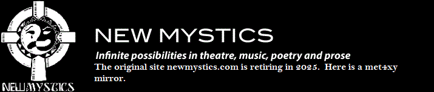

|  | |||||
| Home Jester-Knight Literature Film Music Visual Art Tributes Submissions Links Contact |
Joey Madia Poetry | Lit | Jester-Knight | Essays | Mindmaps | Sutras | Resumes | Photo Gallery
NEWS Listen to Joey's interpretation of John Gartland's Letter to John Wilson, with sound design by Knight Berman Jr by clicking here... Biography I got heavily involved in the performing and literary arts in high school, participating in chorus, theatre, music and writing and entering state and national arts competitions. In ‘86 I got accepted to Beaver College (now Arcadia University) and while there had a blast, got good grades, appeared in 10 theatre productions and became the first undergraduate to direct the fully funded Spring production. I returned for years for the annual networking luncheon with graduating seniors, where I could share the good news that it is possible to make a decent living in the arts. In 2006 I did a reading and a Master’s class in creative writing as part of their “Writers Return to Campus” series. I spent two years after college painting houses and doing construction laborer work before heading up a Feasibility Study for a proposed performing arts center in Manasquan, NJ (31 years later, they are still going strong). I spent a year visiting a dozen theatres in Jersey, meeting with staff and writing research reports on fundraising, education and other aspects of theatre administration. Once they moved to the next phase I moved on and spent several years working in database publishing, while acting, directing and teaching at night and on weekends. I tried graduate school and hated the lazy chumminess of it, so I quit after a semester, spending the money I would have spent on school building a large literary and video/DVD library of all things of interest to me, which is just about everything in one way or another, but especially comparative religion, mythology, history, and the nature of God, Lucifer, and their relationship to Humankind. In 1997 I had a series of life-altering experiences that grabbed a good hunk of my faith and energy so I went out to Arizona to wander the desert for six weeks, beating up on cactus and writing hundreds of poems to try and regain some lost balance and perspective. It ultimately worked, although one night I did “poise a pen on the edge of death” as recorded in one of those hundreds of poems. I took a job as the managing director of a 120-seat black box theatre in AZ (also still going strong, although my two close friends and mentors who founded it have since gone on to that Great White Way in the Sky) and continued to act and direct. I also found Tonya out there, whom I met, courted, moved in with, and married in the whirlwind span of 9 months. She has been my Muse, critic, lover, collaborator, and friend for 26 years now, and we have three children: Daniel, Jeremy and Jolie. In order to spend more time with them I started freelance copyediting academic journals and textbooks, and I still do that when I am not writing or otherwise creating. I never saw myself as a teacher behind a desk, but have always loved working with kids. I have the best of both worlds in being an acting and creative writing teacher. Not only do I teach traditional theatre techniques to serious young actors, I have developed a curriculum based on my philosophy that the greatest value in studying theatre comes not in learning how to act, but in critical thinking, team and confidence building, creative projects, and problem solving, all of which can be taught using theatre. My creative writing teaching includes mentorships with promising young writers in high schools and colleges across the country, as well as workshops at various conferences. In the early 2000s I spent a great deal of time teaching theatre and creative writing and touring in 3 plays for a youth theatre and education company called Youth Stages, 2 of which I wrote. I wrote another 2 plays for them in my capacity as Resident Playwright. They closed their doors several years ago when the founder retired, but several of the plays are being produced elsewhere. I also did outreach and teaching artist work for public schools, recreation centers, and libraries. I have appeared in, directed, and/or written well over 100 plays and a dozen projects on camera, including acting in the 2014 remake of White Zombie and my first film as writer/director received an Honorable Mention at the 2016 Indie Gathering International Film Festival (Cleveland, OH). After 19 years, we recently closed the theatre company I cofounded and served as the Artistic Director of. Along the way we had productions in several states, won some awards, and reached tens of thousands of young people with my bullying education programs and social justice plays. As far as my life as a writer, my screenplay The Man at the Foot of the Bed (based on a true story by Josette Saginario) has been a two-time Official Selection, a Beverly Hills Film Festival invitee, and a two-time quarterfinalist. My screenplay Seven Dates in Seven Nights was a quarterfinalist in the Screencraft Comedy Contest. I have several more screenplays currently being shopped by producers. I have written several main stage musicals and dramas, with a specialty in Historical Education Theatre and participatory plays for youth. I have written and performed pieces about Civil War Captain Louis Emilio as a Chautauqua Scholar for Voices from the Earth, which does symposia and performances on the African American experience in the Civil War and I portrayed for two years six different Golden Age pirates in “Blackbeard and the Pirates of Carolina,” which was commissioned by Port City Tour Co. (In 2017 it was featured on “Passage of Dreams,” a Japanese television show sponsored by Tokyo Disney). I still tour as the pirates and have written four novels about them (the Cannon and the Quill series). I am currently writing the fifth. In June 2019 I toured as Ernesto “Che” Guevara for Oklahoma Chautauqua and returned there in 2022 as Allen Ginsberg. I also portray the pirate Samuel Bellamy for organizations around the country and did a video performance as Mariano Vallejo during the COVID years. My poetry has been widely published and I have had several plays for young audiences published and had another win an award and a staged reading. My plays have now been produced in 17 states and several countries. I have been publishing essays and short stories, and I have written 13 books. New Mystics Enterprises published my fantasy novel, Jester-Knight, in early 2009. The sequel, Aldemere’s Dilemma, will be published in February 2024, and the first book will feature a new cover for the fifteenth anniversary. These and most of my other books are available through my Amazon author page. In 2007, my four-book series on using improvisation and theatre to improve reading and writing in the classroom, The Stage Learning Series, was published by Accompany Publishing in Minneapolis. You can order these books by emailing me at joey@newmystics.com. In 2018, a two-year paranormal investigation of the Webb Memorial Library in NC resulted in a book, Watch Out for the Hallway: Our Two-Year Investigation of the Most Haunted Library in North Carolina (visionarylivingpublishing.com), co-written with my wife Tonya, a psychic medium, reiki master, yoga teacher, and massage therapist. We followed this up in 2020 with Roommates from Beyond: How to Live in a Haunted Home. Like the ocean, this bio is ever changing, as things progress and move ever closer to center. Thanks for sharing the journey. Copyediting and Proofreading I have 26 years of experience in publishing—four with database publishing companies organizing research and survey data and creating books on different facets of education and 22 as a freelance copyeditor and proofreader working with large publishing companies in New York City, Philadelphia, and London. I have experience with political science, teacher education, physical sciences, social sciences, arts education and policy, and historical journals, and have also done copyediting and proofreading for accounting and financial journals and manuals. If you need a professional copyeditor, proofreader, or ghost writer for any project, large or small I would be happy to discuss my rates and experience in more detail with you. My rates and details of my services are available here. You can also connect with me and learn more about my
work at the following online venues: |
||||